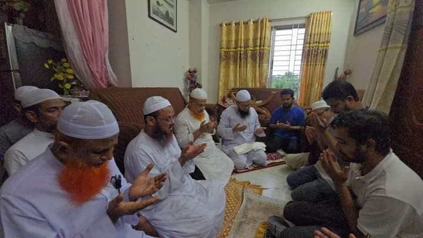
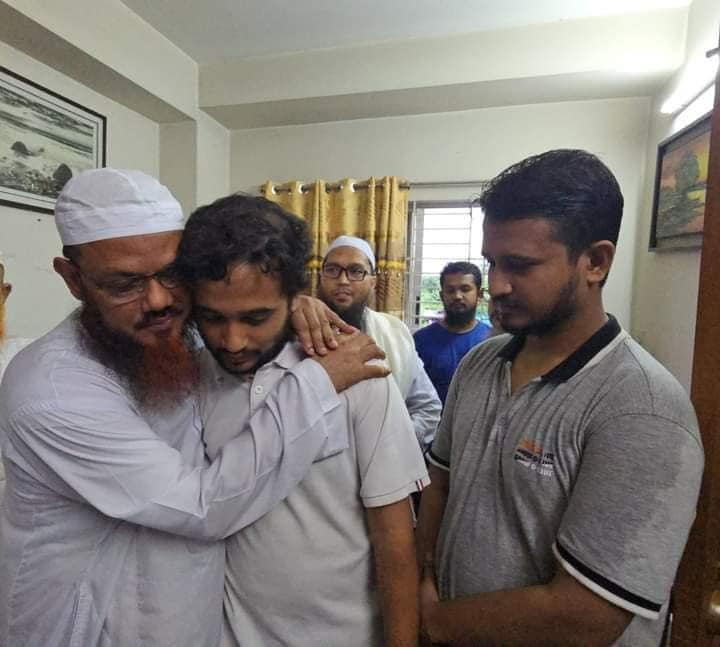

চরমোনাই পীরকে সমর্থন করি না; কিন্তু তাঁর এ কাজ অতি প্রশংসনীয়। তিনি পৌঁছে গেছেন শহিদ…
১ আগস্ট, ২০২৪
চরমোনাই পীরকে সমর্থন করি না; কিন্তু তাঁর এ কাজ অতি প্রশংসনীয়। তিনি পৌঁছে গেছেন শহিদ মাহফুজুর রহমান মুগ্ধর বাসায়। সারা বছর জি হা দ জি হা দ বলে প্যান্ডেল কাঁপানো কথিত বক্তারা যখন কেউ হাড্ডি চাটছে, কেউ আত্মগোপনে চলে গেছে আবার কেউ কেউ দেশ ছেড়ে পালিয়েছে, তখন অভিভাবকের ভূমিকায় চরমোনাই পীর মাঠে আছেন। আল্লাহ তাঁকে হকের ওপর পরিচালিত করুন। প্রকৃত রাহবার হিসেবে কবুল করে নিন।

